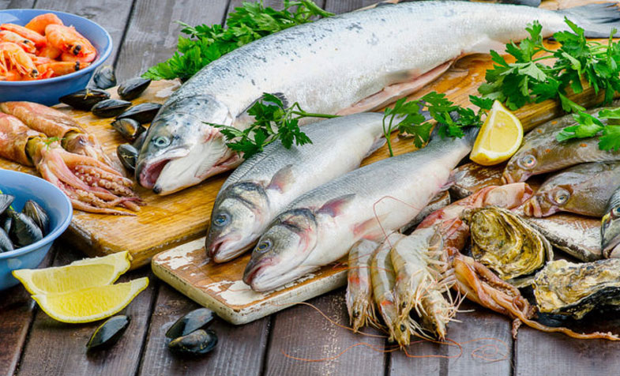
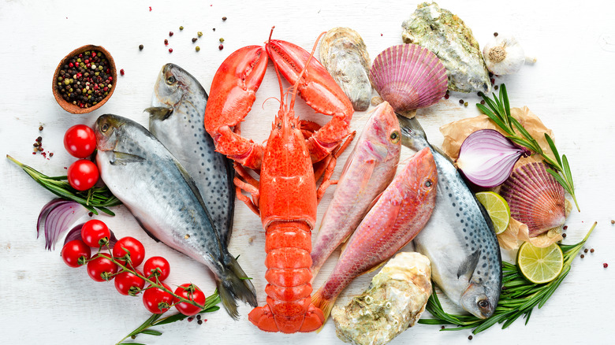
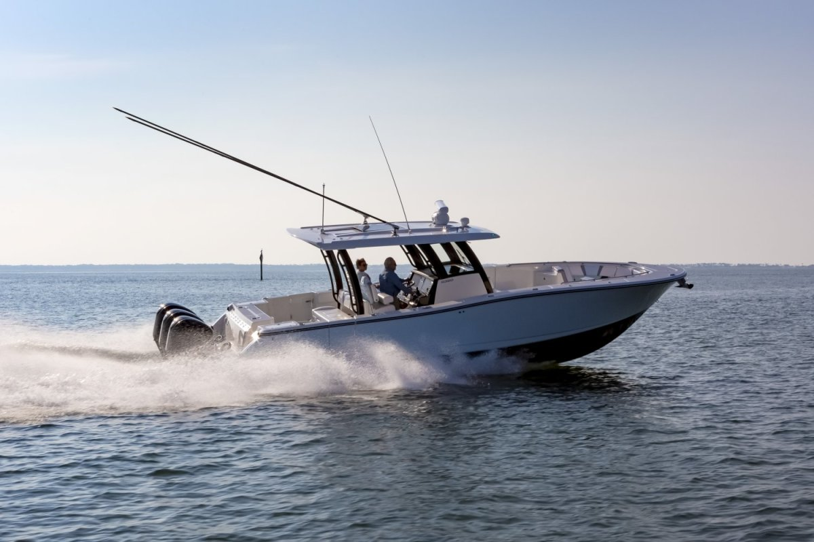
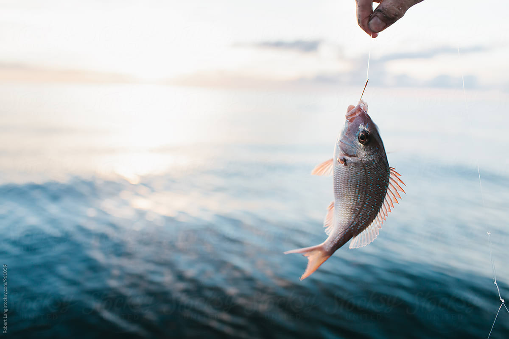
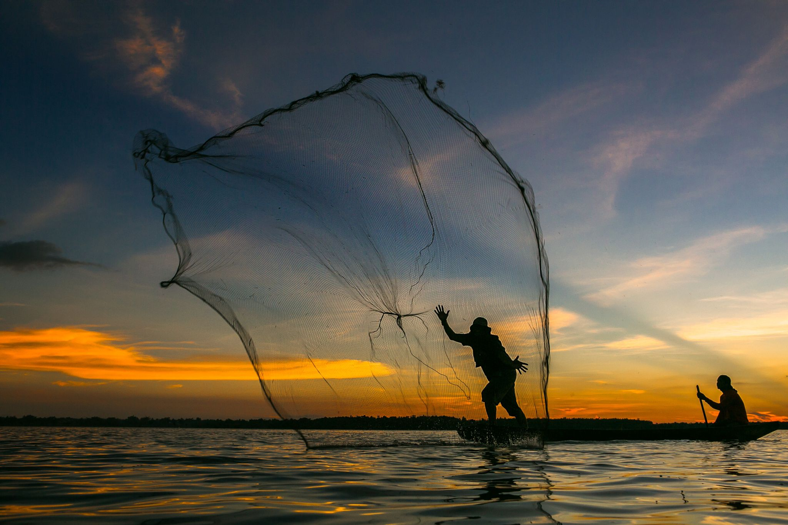

Marine Products
Marine products include a wide range of equipment and supplies essential for boating, fishing, and maritime activities, such as navigation electronics, safety gear, maintenance products, and engine components. They are vital for ensuring the safety, efficiency, and enjoyment of marine operations.




Why Marine Product ?
Introduction
We chose "marine products" for our Community Service Project (CSP) due to their significant environmental, economic, social, and cultural impact. Marine products, including fish, shellfish, and seaweed, are crucial to global sustainability and human well-being.

Environmental Significance
Marine ecosystems are vital for climate regulation and biodiversity. By focusing on marine products, we aim to promote sustainable fishing practices and marine conservation, addressing issues like overfishing, habitat destruction, and pollution. Protecting marine environments ensures their longevity for future generations
Economic Impact
The marine products industry supports millions of jobs, especially in coastal communities. Highlighting this sector's economic benefits, including direct employment and international trade, emphasizes the importance of sustainable practices for economic stability and growth.

Food Security and Nutrition
Marine products are essential for global nutrition, providing high-quality protein and essential nutrients. In many developing countries, fish is a primary protein source. Our project underscores the need for sustainable consumption and responsible fishing to combat food insecurity and malnutrition
Social and Cultural Importance
Marine resources hold deep social and cultural significance, particularly in coastal communities. Our project respects and aims to preserve these traditions while promoting sustainable practices that enhance traditional methods.

Innovation and Future Prospects
The marine products sector offers opportunities for innovation in aquaculture, biotechnology, and sustainable fishing technologies. Focusing on this area positions our project at the forefront of emerging trends, addressing current challenges and preparing for future developments.
Conclusion
Our choice of marine products for the CSP project is driven by their critical role in environmental sustainability, economic stability, food security, social heritage, and innovation. We aim to make a meaningful impact by promoting sustainable practices and ensuring the responsible use of marine resources for generations to come.